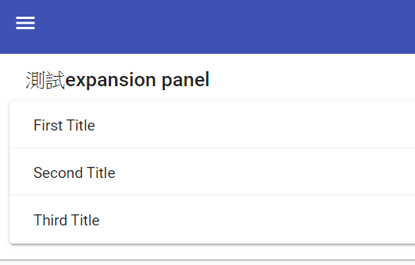
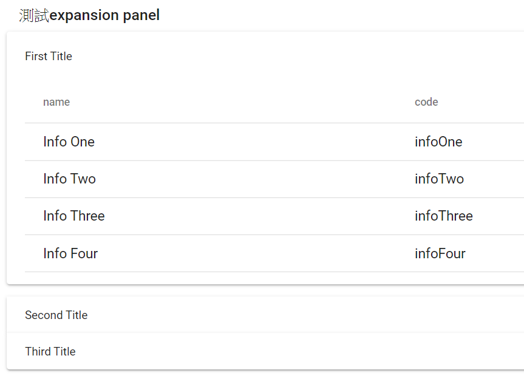

前言 這是因為在網路上有很多的大神寫了不錯用的元件，可以下載來研究和測試，這篇的目地就是將一些使用和測試的心得寫來。
先來建立基本的測試專案 github
加入AngularMateial 1 ng add @angular/material
加入SharedAngularMaterial <https://ithelp.ithome.com.tw/articles/10209937
1 ng g m share\SharedAngularMaterial
在ng9的SharedAngularMaterialModule使用以下的
1 import { ScrollingModule } from '@angular/cdk/scrolling';
接下來在src\styles.scss中
1 2 3 4 5 6 7 8 9 10 11 12 13 14 15 16 17 18 19 20 21 22 23 24 25 26 27 28 29 30 31 32 33 34 35 36 37 38 39 40 41 42 43 44 45 46 47 48 49 50 51 52 53 54 55 56 57 58 59 60 61 62 63 64 65 66 67 68 69 70 71 72 73 74 75 76 77 78 79 80 81 82 83 84 85 86 87 88 89 90 91 92 93 94 95 96 97 98 99 100 101 102 103 104 105 106 107 108 109 110 111 112 113 114 115 116 117 118 119 120 121 mat-card { margin : 1rem ; } .full-width { width : 100% ; } html ,body ,app-root, mat-sidenav-container, .site { margin : 0 ; width : 100% ; height : 100% ; } main { margin-top : 64px ; width : 100% ; height : 100% ; } .hide { display : none; } .height-full { height : 100% ; } .fill-remaining-space { flex : 1 1 auto; } .mat-raised-button { font-size : 18px ; } .novideo { display : flex; align-items : center; justify-content : center; height : 100% ; } .mat-line { font-size : 18px !important ; } .mat-list-base .mat-list-option { font-size : 18px ; } .mat-header-cell { font-size : 14px ; } .mat-cell { font-size : 18px ; } .color1 { background-color : #009688 ; ; } .color2 { background-color : #f4f809 ; } .color3 { background-color : #31f809 ; } .color4 { background-color : #0949f8 ; } .color5 { background-color : #c809f8 ; } .color6 { background-color : #8bc34a ; } .color7 { background-color : #03a9f4 ; } .color8 { background-color : #ff5722 ; } .color9 { background-color : #ccc ; }
安裝flex-layout模組 1 2 3 4 //ng9 npm install --save @angular/flex-layout@9.0.0-beta.31 //ng8 npm install --save @angular/flex-layout@8.0.0-beta.27
1 2 3 4 5 6 7 8 import { FlexLayoutModule } from '@angular/flex-layout' ;... @NgModule ({ ... imports: [ FlexLayoutModule ], ... });
設定路由 在src\app\app-routing.module.ts
1 2 3 4 5 6 7 8 9 10 11 12 13 14 15 16 17 18 19 import { NgModule } from '@angular/core' ;import { Routes, RouterModule } from '@angular/router' ;const routes: Routes = [ { path: '' , redirectTo: 'dashboard' , pathMatch: 'full' }, { path: 'dashboard' , loadChildren: () =>import ('./pages/dashboard/dashboard.module' ).then(m => } ]; @NgModule ({ imports: [RouterModule.forRoot(routes)], exports: [RouterModule] }) export class AppRoutingModule { }
加入Dashboard模組 1 ng g module pages/Dashboard --routing --module
加入顯示元件
1 ng g component pages/Dashboard/Dashboard --flat
設定路由 在src\app\pages\dashboard\dashboard-routing.module.ts
1 2 3 4 5 6 7 8 9 10 11 12 13 14 import { NgModule } from '@angular/core' ;import { Routes, RouterModule } from '@angular/router' ;import { DashboardComponent } from './dashboard.component' ;const routes: Routes = [ { path: '' , component: DashboardComponent } ]; @NgModule ({ imports: [RouterModule.forChild(routes)], exports: [RouterModule] }) export class DashboardRoutingModule { }
建立Dashboard基本頁面 加入head
1 ng g component pages/dashboard/header
在src\app\pages\dashboard\header\header.component.html
1 2 3 4 5 6 7 8 9 10 11 12 13 14 15 16 <mat-toolbar color ="primary" > <button mat-icon-button (click )="onClick()" > <mat-icon > menu</mat-icon > </button > <span > </span > <span class ="fill-remaining-space" > </span > <mat-icon matPrefix style ="margin-right: 10px;font-size: 24px;" > account_circle</mat-icon > <span style ="margin-right: 32px;" > {{user_id}}</span > </mat-toolbar >
在src\app\pages\dashboard\header\header.component.scss
1 2 3 4 5 6 .mat-toolbar { position : fixed; height : 64px ; top : 0 ; z-index : 2 ; }
在src\app\pages\dashboard\header\header.component.ts
1 2 3 4 5 6 7 8 9 10 11 12 13 14 15 16 17 18 19 20 import { Component, OnInit, Output, EventEmitter } from '@angular/core' ;@Component ({ selector: 'app-header' , templateUrl: './header.component.html' , styleUrls: ['./header.component.scss' ] }) export class HeaderComponent implements OnInit { @Output () toggle = new EventEmitter<void >(); user_id = "UI元件測試" ; constructor ( ngOnInit() { } onClick() { this .toggle.emit(); } }
加入sidebar
1 ng g component pages/dashboard/sidebar
在src\app\pages\dashboard\sidebar\sidebar.component.html
1 2 3 4 5 6 7 8 9 10 11 12 13 14 15 16 17 18 19 20 21 22 <mat-nav-list style ="width:192px;" color ="primary" > <mat-list-item [routerLink ]="['/','dashboard','serversetting']" (click )="handleClicked($event)" > <mat-icon md-list-icon > dns</mat-icon > SERVER <span style ="width: 100%;" > </span > <mat-icon matSuffix class ="SufficIcon" > keyboard_arrow_right</mat-icon > </mat-list-item > <mat-list-item [routerLink ]="['/','dashboard','userlist']" (click )="handleClicked($event)" > <mat-icon md-list-icon > settings_applications</mat-icon > USER<span style ="width: 100%;" > </span > <mat-icon matSuffix class ="SufficIcon" > keyboard_arrow_right</mat-icon > </mat-list-item > <mat-list-item [routerLink ]="['/','dashboard','emaileventlist']" (click )="handleClicked($event)" > <mat-icon md-list-icon > email</mat-icon > EMAIL<span style ="width: 100%;" > </span > <mat-icon matSuffix class ="SufficIcon" > keyboard_arrow_right</mat-icon > </mat-list-item > <mat-divider > </mat-divider > </mat-nav-list >
在src\app\pages\dashboard\sidebar\sidebar.component.scss
1 2 3 4 5 6 .mat-icon { margin-right : 12px ; } .SufficIcon { margin :0px ; }
在src\app\pages\dashboard\sidebar\sidebar.component.ts
1 2 3 4 5 6 7 8 9 10 11 12 13 14 15 16 17 18 19 20 import { Component, OnInit, Output, EventEmitter } from '@angular/core' ;@Component ({ selector: 'app-sidebar' , templateUrl: './sidebar.component.html' , styleUrls: ['./sidebar.component.scss' ] }) export class SidebarComponent implements OnInit { @Output () navClicked = new EventEmitter<void >(); constructor ( ngOnInit() { } handleClicked(ev: Event) { ev.preventDefault(); this .navClicked.emit(); } }
在src\app\pages\dashboard\dashboard.component.html
1 2 3 4 5 6 7 8 9 10 11 12 13 14 15 16 17 18 19 20 <header > <app-header (toggle )="sidenav.toggle()" > </app-header > </header > <mat-sidenav-container > <mat-sidenav #sidenav mode ="over" [autoFocus ]="false" > <app-sidebar (navClicked )="sidenav.close()" > </app-sidebar > </mat-sidenav > <mat-sidenav-content #benji > <div class ="site" > <main > <router-outlet (activate )="onActivate($event)" > </router-outlet > </main > </div > </mat-sidenav-content > </mat-sidenav-container >
在src\app\pages\dashboard\dashboard.component.ts
1 2 3 4 5 6 7 8 9 10 11 12 13 14 15 16 17 18 19 20 21 22 23 import { Component, OnInit, ViewChild } from '@angular/core' ;import { MatSidenavContent } from '@angular/material/sidenav' ;@Component ({ selector: 'app-dashboard' , templateUrl: './dashboard.component.html' , styleUrls: ['./dashboard.component.scss' ] }) export class DashboardComponent implements OnInit { @ViewChild ('benji' , { static : false }) el: MatSidenavContent; constructor ( ngOnInit() { } onActivate(event) { if (this .el && this .el.getElementRef()) { this .el.getElementRef().nativeElement.scrollTop = 0 ; } } }
測試angular-progress-bars 先來在pages建立資料夾angular-progress-bars
1 ng g component pages/angular-progress-bars --module pages\dashboard\dashboard.module.ts
先以div來建立progressbar 1 ng g component pages/angular-progress-bars/bar --module pages\dashboard\dashboard.module.ts
在src\app\pages\angular-progress-bars\bar\bar.component.html
1 2 <div [ngStyle ]="{'width': value+ '%'}" class ="bar" > </div >
在src\app\pages\angular-progress-bars\bar\bar.component.scss
1 2 3 4 5 6 7 8 .bar { background-color : blueviolet; height : 100% ; } :host { display: block; height : 100% ; }
在src\app\pages\angular-progress-bars\bar\bar.component.ts
1 2 3 4 5 6 7 8 9 10 11 12 13 14 15 import { Component, OnInit, Input } from '@angular/core' ;@Component ({ selector: 'app-bar' , templateUrl: './bar.component.html' , styleUrls: ['./bar.component.scss' ] }) export class BarComponent implements OnInit { @Input () value: number = 0 ; constructor ( ngOnInit() { } }
以svg來建立progressbar 1 ng g component pages/angular-progress-bars/svgbar --module pages\dashboard\dashboard.module.ts
在src\app\pages\angular-progress-bars\svgbar\svgbar.component.html
1 2 3 4 <svg viewBox ="0, 0, 100, 10" > <rect [attr.width ]="value" height ="10" fill ="blueviolet" > </rect > </svg >
在src\app\pages\angular-progress-bars\svgbar\svgbar.component.ts
1 2 3 4 5 6 7 8 9 10 11 12 13 14 15 16 import { Component, OnInit, Input } from '@angular/core' ;@Component ({ selector: 'app-svgbar' , templateUrl: './svgbar.component.html' , styleUrls: ['./svgbar.component.scss' ] }) export class SvgbarComponent implements OnInit { @Input () value: number = 0 ; constructor ( ngOnInit() { } }
在src\app\pages\angular-progress-bars\angular-progress-bars.component.html
1 2 3 4 <p > angular-progress-bars works!</p > <app-bar [(value )]="progress" > </app-bar > <hr > <app-svgbar [(value )]="progress" > </app-svgbar >
在src\app\pages\angular-progress-bars\angular-progress-bars.component.ts
1 2 3 4 5 6 7 8 9 10 11 12 13 14 15 export class AngularProgressBarsComponent implements OnInit { progress = 0 ; constructor ( ngOnInit(): void { setInterval(() => if (this .progress >= 100 ) { this .progress = 0 ; } else { this .progress++; } }, 1000 ); } }
建立spinnerprogress 1 ng g component pages/angular-progress-bars/spinner --module pages\dashboard\dashboard.module.ts
在src\app\pages\angular-progress-bars\spinner\spinner.component.html
1 2 3 4 5 6 7 <svg viewBox ="0, 0, 100,100" > <circle class ="progress-circle" stroke-width ="6" [style.strokeDasharray ]="circumference" [style.strokeDashoffset ]="strokeDashoffset" fill ="transparent" stroke ="blueviolet" r ="47" cx ="50" cy ="50" > </circle > <text x ="50" y ="50" class ="text" text-anchor ="middle" > {{(value)+'%'}} </text > </svg >
在src\app\pages\angular-progress-bars\spinner\spinner.component.scss
1 2 3 4 5 6 7 8 .progress-circle { transition : stroke-dashoffset 0.3s ; transform : rotate(-90deg ); transform-origin : 50% 50% ; } .text { font-family : 'Roboto' ; }
在src\app\pages\angular-progress-bars\spinner\spinner.component.ts
1 2 3 4 5 6 7 8 9 10 11 12 13 14 15 16 17 18 19 20 21 22 23 24 25 26 27 28 29 30 import { Component, OnInit, Input, SimpleChanges } from '@angular/core' ;@Component ({ selector: 'app-spinner' , templateUrl: './spinner.component.html' , styleUrls: ['./spinner.component.scss' ] }) export class SpinnerComponent implements OnInit { @Input () value: number = 0 ; public circumference: number = 2 * Math .PI * 47 public strokeDashoffset: number = 0 constructor ( ngOnInit() { } ngOnChanges(changes: SimpleChanges): void { if (changes['value' ]) { this .onPercentageChanged(changes['value' ].currentValue); } } onPercentageChanged(val: number ) { const offset = this .circumference - (val / 100 ) * this .circumference; this .strokeDashoffset = offset; } }
參考資料 angular-progress-bars
多國語言（國際化）測試 在進行此系統之前，要將國際化的資料準備好，是以json的格式來使用可以參考lession9:國際化
安裝模組 我們使用[ngx-translate ]來處理們的國際化先來安裝
1 2 npm install @ngx-translate/core --save npm install @ngx-translate/http-loader --save
首先在根模組（AppModule）上設定好TranslateModule，使用forRoot()的方法來設定，並在上方先宣告function作無TranslateModule的設定語系檔讀取器。
在src\app\app.module.ts
1 2 3 4 5 6 7 8 9 10 11 12 13 14 15 16 17 18 19 20 21 22 23 24 25 26 27 28 29 30 31 32 33 34 35 import { TranslateModule, TranslateLoader } from '@ngx-translate/core' ;import { TranslateHttpLoader } from '@ngx-translate/http-loader' ;import { HttpClient } from '@angular/common/http' ;export function HttpLoaderFactory (http: HttpClient ) return new TranslateHttpLoader(http); } @NgModule ({ declarations: [ AppComponent, ], imports: [ BrowserModule, AppRoutingModule, BrowserAnimationsModule, SharedAngularMaterialModule, TranslateModule.forRoot({ loader: { provide: TranslateLoader, useFactory: HttpLoaderFactory, deps: [HttpClient] } }), ], providers: [], bootstrap: [AppComponent] }) export class AppModule { }
在SharedAngularMaterialModule 要import和export翻譯模組(TranslateModule)
在src\app\share\shared-angular-material\shared-angular-material.module.ts
1 2 3 4 5 6 7 8 9 10 11 12 13 14 15 16 17 18 19 20 21 22 23 24 25 import { TranslateModule } from '@ngx-translate/core' ;@NgModule ({ declarations: [], imports: [ FlexLayoutModule, TranslateModule, ], exports: [ TranslateModule, ] }) export class SharedAngularMaterialModule implements OnInit { }
這個TranslateHttpLoader有兩個參數可以使用，分別是多語系的檔案路徑及json檔，如果都沒有設定的話預設會使用/assets/i18n/及.json，也就是說只要在assets目錄下建立一個叫i18n的資料安，對之後設定語系時和json檔的檔名一樣他就會自已找到相對應的語系了，十分方便。
建立語系 en.json
1 2 3 4 5 6 7 8 9 10 11 12 13 14 15 16 17 18 19 20 21 22 23 24 25 26 27 28 29 30 31 32 33 34 { "menu" : { "home" : "Home" , "system" : "system" , "systemList" : { "systemsetting" : "systemsetting" }, "feature" : { "name" : "fun module" , "form" : "form" }, "language" : "language" , "languageList" : { "taiwan" : "繁體中文" , "english" : "English" , "japan" : "日本語" } }, "error" : { "require" : "{{itemName}}is require" }, "enum" : { "gender" : "man" }, "validationMessages" : { "email" : { "required" : "email is require" , "pattern" : "Please input the correct email" } }, "systemsetting" : { "vehicledefaultposition" : "Vehicle default position:" } }
ja.json
1 2 3 4 5 6 7 8 9 10 11 12 13 14 15 16 17 18 19 20 21 22 23 24 25 26 27 28 29 30 31 32 33 34 { "menu" : { "home" : "ホーム" , "system" : "システム" , "systemList" : { "systemsetting" : "システム設定" }, "feature" : { "name" : "汎用モジュール" , "form" : "形" }, "language" : "言語" , "languageList" : { "taiwan" : "繁體中文" , "english" : "English" , "japan" : "日本語" } }, "error" : { "require" : "{{itemName}}必須フィールド" }, "enum" : { "gender" : "男性" }, "validationMessages" : { "email" : { "required" : "メールアドレスを入力する必要があります" , "pattern" : "正しいメールアドレスを入力してください" } }, "systemsetting" : { "vehicledefaultposition" : "事前設定された車両のGPS位置:" } }
zh-tw.json
1 2 3 4 5 6 7 8 9 10 11 12 13 14 15 16 17 18 19 20 21 22 23 24 25 26 27 28 29 30 31 32 33 34 { "menu" : { "home" : "首頁" , "system" : "系統" , "systemList" : { "systemsetting" : "系統設定" }, "feature" : { "name" : "功能模組" , "form" : "表單" }, "language" : "語言" , "languageList" : { "taiwan" : "繁體中文" , "english" : "English" , "japan" : "日本語" } }, "error" : { "require" : "{{itemName}}為必埴欄位" }, "enum" : { "gender" : "男" }, "validationMessages" : { "email" : { "required" : "郵箱必須輸入" , "pattern" : "請輸入正確的郵箱地址" } }, "systemsetting" : { "vehicledefaultposition" : "預設車輛GPS位置:" } }
建立語言服務 在來建立一個service，在切換語系時可以幫我們來處理一下
1 ng g service _services/language/Language
在src\app\_services\language\language.service.ts
1 2 3 4 5 6 7 8 9 10 11 12 13 14 15 16 17 18 19 20 21 22 23 24 25 26 27 28 29 30 31 32 33 34 35 36 37 38 39 40 import { Injectable } from '@angular/core' ;import { LangChangeEvent, TranslateService } from '@ngx-translate/core' ;import { ReplaySubject } from 'rxjs' ;import { take } from 'rxjs/operators' ;@Injectable ({ providedIn: 'root' }) export class LanguageService { language$ = new ReplaySubject<LangChangeEvent>(1 ); translate = this .translateService; private curlanguage = "en" ; constructor (private translateService: TranslateService setInitState() { this .translateService.addLangs(['en' , 'zh-tw' , 'jp' ]); if (localStorage.getItem("language" ) != null ) { this .curlanguage = localStorage.getItem("language" ); } else { this .curlanguage = (this .translate.getBrowserLang().includes('zh' ) ? 'zh-tw' : 'en' ); localStorage.setItem("language" , this .curlanguage); } } selectLanguage(lang: string ) { this .translateService.onLangChange.pipe(take(1 )).subscribe(result => this .language$.next(result); }); this .translateService.use(lang); this .curlanguage = lang; localStorage.setItem("language" , this .curlanguage); } setCurrentLanguage() { this .selectLanguage(localStorage.getItem("language" )); } }
初始化 在src\app\app.component.ts
1 2 3 4 5 6 7 8 9 10 11 12 13 14 15 import { Component } from '@angular/core' ;import { LanguageService } from './_services/language/language.service' ;@Component ({ selector: 'app-root' , templateUrl: './app.component.html' , styleUrls: ['./app.component.scss' ] }) export class AppComponent { title = 'TestUIDashboard' ; constructor (private languageService: LanguageService this .languageService.setInitState(); this .languageService.setCurrentLanguage(); } }
切換語系 要在head上來切換語系
在src\app\pages\dashboard\header\header.component.html
1 2 3 4 5 6 7 8 9 10 11 12 13 14 15 16 17 18 19 20 21 <mat-toolbar color ="primary" > <button mat-icon-button (click )="onClick()" > <mat-icon > menu</mat-icon > </button > <span > </span > <span class ="fill-remaining-space" > </span > <mat-icon matPrefix style ="margin-right: 10px;font-size: 24px;" > account_circle</mat-icon > <span style ="margin-right: 32px;" > {{user_id}}</span > <mat-form-field style ="width: 144px;" > <mat-icon style ="font-size: 24px;vertical-align: bottom;" matPrefix > language</mat-icon > <mat-select [(ngModel )]="langselected" (selectionChange )="selectChange($event)" > <mat-option *ngFor ="let item of langslist" [value ]="item.lang" > {{ item.name }}</mat-option > </mat-select > </mat-form-field > </mat-toolbar >
在src\app\pages\dashboard\header\header.component.ts
1 2 3 4 5 6 7 8 9 10 11 12 13 14 15 16 17 18 19 20 21 22 23 24 25 26 27 28 29 30 31 32 33 34 35 36 37 38 39 40 41 42 43 44 45 46 47 48 49 50 51 52 53 54 55 56 57 58 59 60 61 62 63 64 65 66 67 68 69 70 71 72 73 74 75 76 77 78 79 80 import { Component, OnInit, Output, EventEmitter } from '@angular/core' ;import { LanguageService } from 'src/app/_services/language/language.service' ;@Component ({ selector: 'app-header' , templateUrl: './header.component.html' , styleUrls: ['./header.component.scss' ] }) export class HeaderComponent implements OnInit { @Output () toggle = new EventEmitter<void >(); @Output () langChange = new EventEmitter<string >(); langselected = "en" ; langslist = []; user_id = "元件測試" ; constructor ( private languageService: LanguageService ) { this .processLanguageList(); } ngOnInit(): void { } onClick() { this .toggle.emit(); } selectChange(ev) { this .languageService.selectLanguage(ev.value); this .langChange.emit(ev.value); } processLanguageList() { this .languageService.translate.get('menu.languageList' ).subscribe(value => console .log(value); for (const key in value) { if (value.hasOwnProperty(key)) { let element = null ; let langitem = null ; switch (key) { case "taiwan" : langitem = { "lang" : "zh-tw" , "lenum" : key, "name" : value[key] } break ; case "english" : langitem = { "lang" : "en" , "lenum" : key, "name" : value[key] } break ; case "japan" : langitem = { "lang" : "ja" , "lenum" : key, "name" : value[key] } break ; } this .langslist.push(langitem); } } }); this .langselected = this .languageService.translate.currentLang; } }
在用法上在html上src\app\pages\ng-circle-progress\ng-circle-progress.component.html
1 2 3 4 5 6 7 8 9 10 <mat-card > <mat-card-header > <mat-card-title > 多國語言用法:</mat-card-title > </mat-card-header > <mat-card-content > <p > {{'menu.home' | translate }}</p > <p [translate ]="'menu.system'" > </p > </mat-card-content > </mat-card >
元件ng-circle-progress(可以使用) 這是在網路上看到的元件ng-circle-progress ，有可以作者有寫好可視覺化的參數，可以直接拿來使用，我是將它轉元件來使用
建立元件
1 ng g component _common/CircleProgress --module pages\dashboard\dashboard.module.ts
之後的程式可以到github 去看
1 ng g component pages/NgCircleProgress --module pages\dashboard\dashboard.module.ts
元件animate.css(動畫) 可以參考animate.css 這個github上有實作很多的動畫效果，來測試一下是否可以加到專案上使用
1 ng g component pages/ngTestAnimate --module pages\dashboard\dashboard.module.ts
安裝
1 npm install animate.css --save
在src\styles.scss
1 @import '~animate.css/animate.min' ;
有兩種使用方式
直接在要有動畫的元件上加上class如下
1 <div class="animated bounce delay-2s">Example</div>
也可以使用ngClass
在src\app\pages\ng-test-animate\ng-test-animate.component.html
1 2 3 4 5 6 7 8 9 10 <form id ="myform" [ngClass ]="{'animated bounce': loginfail}" (ngSubmit )="onSubmit($event)" > <mat-card class ="login-card mat-elevation-z4 " > <mat-card-content > <mat-card-actions > <button mat-raised-button type ="submit" [disabled ]="loginfail" color ="primary" > Login</button > </mat-card-actions > </mat-card-content > </mat-card > </form >
在src\app\pages\ng-test-animate\ng-test-animate.component.ts
1 2 3 4 5 6 7 8 9 10 11 12 13 14 15 16 17 18 export class NgTestAnimateComponent implements OnInit { loginfail = false ; hide = true ; constructor ( ) { } ngOnInit() { } onSubmit(ev) { this .loginfail = true ; setTimeout(() => this .loginfail = false ; }, 1500 ); } }
在建立動畫服務
1 ng g service _services/animateCSS
在src\app\_services\animate-css.service.ts
1 2 3 4 5 6 7 8 9 10 11 12 13 14 15 16 17 18 19 20 21 22 23 24 25 import { Injectable } from '@angular/core' ;@Injectable ({ providedIn: 'root' }) export class AnimateCSSService { constructor ( } animateCss(element, animationName, callback?) { const node = document .querySelector(element) node.classList.add('animated' , animationName) function handleAnimationEnd ( node.classList.remove('animated' , animationName) node.removeEventListener('animationend' , handleAnimationEnd) if (typeof callback === 'function' ) callback() } node.addEventListener('animationend' , handleAnimationEnd); } }
在
1 2 3 <form id ="myform" (ngSubmit )="onSubmit($event)" > </form >
在src\app\pages\ng-test-animate\ng-test-animate.component.ts
1 2 3 4 5 6 7 8 onSubmit(ev) { this .loginfail = true ; this .animateCSSService.animateCss('#myform' , 'shake' , () => this .loginfail = false ; console .log("end shake animate" ); }); }
或是
1 2 3 4 5 6 7 8 9 onSubmit(ev) { this .loginfail = true ; this .animateCSSService.animateCss('#myform' , 'bounce' , this .cbAnimateEnd); } cbAnimateEnd = () => console .log(this ); this .loginfail = false ; console .log("end bounce animate" ); };
toast(左下角訊息通知) 安裝
1 npm install ngx-toastr --save
加入CSS
在angular.json
1 2 3 4 5 "styles": [ "./node_modules/@angular/material/prebuilt-themes/indigo-pink.css", "src/styles.scss", "node_modules/ngx-toastr/toastr.css" ],
在src\app\app.module.ts
1 2 3 4 5 6 7 8 9 10 11 imports: [ ToastrModule.forRoot({ positionClass: 'toast-bottom-right' , enableHtml: true , closeButton: true , }) ],
加入測試頁面
1 ng g component pages/NgTestToastr --module pages\dashboard\dashboard.module.ts
在src\app\pages\ng-test-toastr\ng-test-toastr.component.html
1 2 3 4 5 6 7 8 9 10 11 12 <mat-card class ="mat-elevation-z2" style ="width: 90vw;" > <mat-card-header > <mat-card-title > 測試toast</mat-card-title > </mat-card-header > <mat-card-content > <button (click )="openToast()" > Open Toast</button > <br > <button (click )="clearLastToast()" > Clear Last Toast </button > <br > <button (click )="clearToasts()" > Clear All Toasts </button > </mat-card-content > </mat-card >
在src\app\pages\ng-test-toastr\ng-test-toastr.component.ts
1 2 3 4 5 6 7 8 9 10 11 12 13 14 15 16 17 18 19 20 21 22 23 24 25 26 27 28 29 30 31 32 33 34 35 36 37 38 39 40 41 42 43 44 45 46 47 48 49 50 51 52 53 54 55 56 57 58 59 60 61 62 63 64 65 66 67 68 69 70 71 72 73 74 75 76 import { Component, OnInit } from '@angular/core' ;import { ToastrService, GlobalConfig } from 'ngx-toastr' ;import { cloneDeep, random } from 'lodash' ;interface Quote { title?: string ; message?: string ; } const quotes: Quote[] = [ { title: 'Title' , message: 'Message' }, { title: '😃' , message: 'Supoorts Emoji' , }, { title: '移動' , message: `<a href='/dashboard/ngtestmap' > 地圖 </a>` , } ]; const types = ['success' , 'error' , 'info' , 'warning' ];@Component ({ selector: 'app-ng-test-toastr' , templateUrl: './ng-test-toastr.component.html' , styleUrls: ['./ng-test-toastr.component.scss' ] }) export class NgTestToastrComponent implements OnInit { options: GlobalConfig; title = '' ; message = '' ; type = types[0 ]; private lastInserted: number [] = []; constructor (private toastr: ToastrService this .options = this .toastr.toastrConfig; } ngOnInit(): void { } openToast() { const { message, title } = this .getMessage(); const opt = cloneDeep(this .options); const inserted = this .toastr.show( message, title, opt, this .options.iconClasses[this .type], ); if (inserted) { this .lastInserted.push(inserted.toastId); } return inserted; } clearToasts() { this .toastr.clear(); } clearLastToast() { this .toastr.clear(this .lastInserted.pop()); } getMessage() { let m: string | undefined = this .message; let t: string | undefined = this .title; if (!this .title.length && !this .message.length) { const randomMessage = quotes[random(0 , quotes.length - 1 )]; m = randomMessage.message; t = randomMessage.title; } return { message: m, title: t, }; } }
參考資料 toastr
snackbar 在左下角，要出現訊息因為有兩種用法，使用angular material的snackbar來實作，在網路上有神人有實作連續訊息時，會有由上到下排好，我只是拿來使用。
建立資料夾在src\app\_common\Snackbar
在angular.json加入css
1 2 3 4 5 "styles": [ "./node_modules/@angular/material/prebuilt-themes/indigo-pink.css", "src/styles.scss", "src/app/_common/Snackbar/styles/style.css" ],
在src\app\app.component.html中加入
1 2 <router-outlet > </router-outlet > <ngx-snackbar [position ]="'bottom-center'" [max ]="3" > </ngx-snackbar >
參考資料 ngx-snackbar
SSE測試 目前使用之前有測試的python SSE的功能
先來建立測試頁面
1 ng g component pages/NgTestSSE --module pages\dashboard\dashboard.module.ts
在送訊息的頁面src\app\pages\ng-test-sse\ng-test-sse.component.html
1 2 3 4 5 6 7 8 9 10 11 12 13 14 15 16 17 18 19 20 <div fxLayout ="column" fxLayoutAlign ="center stretch" > <form [formGroup ]="formModel" (ngSubmit )="onSubmit($event)" > <mat-card > <mat-card-title > 送SSE訊息</mat-card-title > <mat-form-field class ="full-width" > <mat-icon matPrefix style ="margin-right: 10px;" > mail</mat-icon > <input matInput placeholder ="channelname" formControlName ="channel" > <mat-error *ngIf ="formErrors.channel" > {{formErrors.channel}}</mat-error > </mat-form-field > <mat-form-field class ="full-width" > <mat-icon matPrefix style ="margin-right: 10px;" > vpn_key</mat-icon > <input matInput placeholder ="message" formControlName ="message" > <mat-error *ngIf ="formErrors.message" > {{formErrors.message}}</mat-error > </mat-form-field > <mat-card-actions > <button mat-raised-button type ="submit" [disabled ]="!formModel.valid" color ="primary" > Send</button > </mat-card-actions > </mat-card > </form > </div >
在送訊息的頁面src\app\pages\ng-test-sse\ng-test-sse.component.ts
1 2 3 4 5 6 7 8 9 10 11 12 13 14 15 16 17 18 19 20 21 22 23 24 25 26 27 28 29 30 31 32 33 34 35 36 37 38 39 40 41 42 43 44 45 46 47 48 49 50 51 52 53 54 55 56 57 58 59 60 61 62 63 64 65 66 67 68 69 70 71 72 73 74 75 76 77 78 79 80 81 82 83 84 85 86 87 88 89 90 91 92 93 94 95 import { Component, OnInit } from '@angular/core' ;import { FormBuilder, FormGroup, Validators } from '@angular/forms' ;import { SSEService } from 'src/app/_services/SSE/sse.service' ;@Component ({ selector: 'app-ng-test-sse' , templateUrl: './ng-test-sse.component.html' , styleUrls: ['./ng-test-sse.component.scss' ] }) export class NgTestSSEComponent implements OnInit { formModel: FormGroup dataInfo: any = {}; formErrors = { "channel" : "" , "message" : "" , "formError" : "" }; vaildationMessages = { "channel" : { "required" : "必須輸入" , "minlength" : "至少要2位" }, "message" : { "required" : "必須須輸入" , "minlength" : "至少要2位" } } constructor ( private fb: FormBuilder, private sseService: SSEService, ) { } ngOnInit(): void { this .buildForm(); } buildForm() { this .formModel = this .fb.group({ "channel" : [ this .dataInfo.channel, [ Validators.required, Validators.minLength(2 ), ] ], "message" : [ this .dataInfo.message, [ Validators.required, Validators.minLength(2 ), ] ] }); this .formModel.valueChanges.subscribe(data => this .onValueChange(data); }); } onValueChange(data?: any ) { if (!this .formModel) { return ; } const form = this .formModel; for (const field in this .formErrors) { this .formErrors[field] = "" ; const control = form.get(field); if (control && control.dirty && !control.valid) { const messages = this .vaildationMessages[field]; for (const key in control.errors) { this .formErrors[field] += messages[key] + " " ; } } } } onSubmit(e) { if (this .formModel.valid) { this .dataInfo = this .formModel.value; console .log(`send to server ${this .dataInfo} ` ); this .sseService.Post(this .dataInfo).subscribe( res => { console .log(res); }, error => { console .log(error); } ); } } }
產生SSE服務
1 ng g service _services/SSE/SSE
在src\app\_services\SSE\sse.service.ts
1 2 3 4 5 6 7 8 9 10 11 12 13 14 15 16 17 18 19 20 21 import { Injectable } from '@angular/core' ;import { HttpClient } from '@angular/common/http' ;import { environment } from 'src/environments/environment' ;@Injectable ({ providedIn: 'root' }) export class SSEService { api = `${environment.apiUrl} /users` ; constructor (private http: HttpClient Post(data) { this .api = `${environment.apiUrl} /messages` ; return this .http.post<any >(this .api, data); } getEventSource(channel: string ) { const source = new EventSource(`${environment.apiUrl} /stream?channel=${channel} ` ); return source; } }
在src\app\app.component.ts
1 2 3 4 5 6 7 8 9 10 11 12 13 14 15 16 17 18 19 20 21 22 23 24 25 26 27 28 29 30 31 32 33 34 35 36 37 38 39 40 41 42 43 44 45 46 47 48 49 50 51 52 53 54 55 56 57 58 59 60 61 import { Component } from '@angular/core' ;import { LanguageService } from './_services/language/language.service' ;import { SSEService } from './_services/SSE/sse.service' ;import { GlobalConfig, ToastrService } from 'ngx-toastr' ;import { cloneDeep } from 'lodash' ;const types = ['success' , 'error' , 'info' , 'warning' ];@Component ({ selector: 'app-root' , templateUrl: './app.component.html' , styleUrls: ['./app.component.scss' ] }) export class AppComponent { title = 'TestUIDashboard' ; options: GlobalConfig; constructor ( private languageService: LanguageService, private sseService: SSEService, private toastr: ToastrService ) { this .options = this .toastr.toastrConfig; this .languageService.setInitState(); this .languageService.setCurrentLanguage(); this .initSSE(); } initSSE() { const source = this .sseService.getEventSource("channel1" ); source.addEventListener('social' , (event: MessageEvent ) => { console .log(event.data); var resdata = JSON .parse(event.data); let data = { title: '' , message: resdata.message } this .openToast(data); }); source.addEventListener('error' , (event: MessageEvent ) => { console .log('reconnected service!' ) }, false ); } openToast(data: any ) { let type = types[0 ]; const { message, title } = data; const opt = cloneDeep(this .options); const inserted = this .toastr.show( message, title, opt, this .options.iconClasses[type ], ); } }
測試多個video的同步播放 先來測試多個video，下載時的情況，
1 ng g component pages/NgTestMultiVideos --module pages\dashboard\dashboard.module.ts
來測試一個video，下載有buffer的情況
1 ng g component pages/NgTestSingleVideos --module pages\dashboard\dashboard.module.ts
參考資料 How to preload an entire html5 video before play, SOLVED
擷圖功能 在專案上有使用到，將影片拍下來主要的程式碼如下
1 2 3 4 5 6 7 8 9 10 11 12 13 14 15 16 17 private captureImage(video: HTMLVideoElement, filename: string = "capture" ) { var canvas = document .createElement("canvas" ); canvas.width = video.videoWidth; canvas.height = video.videoHeight; canvas.getContext('2d' ).drawImage(video, 0 , 0 , canvas.width, canvas.height); canvas.toBlob(function (blob ) const a = document .createElement("a" ); a.href = URL.createObjectURL(blob); a.setAttribute("download" , `${filename} .jpeg` ); document .body.appendChild(a); a.click(); document .body.removeChild(a); }, 'image/jpeg' , 0.95 ); }
不過如果要拍外部連結的影片，卻有CROS的問題在Tainted canvases may not be exported 其中有解決的方法是設定<video>的標籤crossorigin="anonymous"
1 2 3 4 5 <video #video class ="video" crossorigin ="anonymous" [attr.autoplay ]="autoplay ? true : null" [preload ]="preload ? 'auto' : 'metadata'" [attr.poster ]="poster ? poster : null" [attr.loop ]="loop ? loop : null" [attr.playsinline ]="playsinline ? true : null" > <ng-content select ="source" > </ng-content > <ng-content select ="track" > </ng-content > This browser does not support HTML5 video. </video >
日曆控制元件 在專案上有使用到此元件，所以在網路上有人分享元件，來測試一下Angular Material Extra Components (DatetimePicker, TimePicker, ColorPicker, FileInput …) for @angular/material 7.x, 8.x, 9.x
先來建立測試頁面
1 ng g component pages/NgTestDateTimePicker --module pages\dashboard\dashboard.module.ts
安裝時間元件
Material Expansion Panel 這是Angular material的元件，可以像是將細節的資訊隱藏起來，等選到時才打開，有點像是手風琴的效果。因為我們的資料是以群組為主，不像原來的應用，所以來寫測試程式來處理一下。
先來建立測試頁面
1 ng g component pages/NgTestMaterialExpansionPanel
資料准備，和分類在src\app\pages\ng-test-material-expansion-panel\ng-test-material-expansion-panel.component.ts
1 2 3 4 5 6 7 8 9 10 11 12 13 14 15 16 17 18 19 20 21 22 23 24 25 26 27 28 29 30 31 32 33 34 35 36 37 38 39 40 41 42 43 44 45 46 47 48 49 50 51 52 53 54 55 56 57 58 import { Component, OnInit } from '@angular/core' ;export const titles = [ { title: 'First Title' , titleId: 'firstTitle' , info: [ { name: 'Info One' , code: 'infoOne' }, { name: 'Info Two' , code: 'infoTwo' }, { name: 'Info Three' , code: 'infoThree' }, { name: 'Info Four' , code: 'infoFour' } ] }, { title: 'Second Title' , titleId: 'secondTitle' , info: [ { name: 'Package' , code: 'package' }, { name: 'Package Two' , code: 'packageTwo' } ] }, { title: 'Third Title' , titleId: 'thirdTitle' , info: [ { name: 'Widget One' , code: 'widgetOne' }, { name: 'Widget Two' , code: 'widgetTwo' }, { name: 'Widget Three' , code: 'widgetThree' }, { name: 'Widget Four' , code: 'widgetFour' } ] } ]; @Component ({ selector: 'app-ng-test-material-expansion-panel' , templateUrl: './ng-test-material-expansion-panel.component.html' , styleUrls: ['./ng-test-material-expansion-panel.component.scss' ] }) export class NgTestMaterialExpansionPanelComponent implements OnInit { titlesForIterate = []; constructor ( this .initGroupData(); console .log(this .titlesForIterate); } ngOnInit(): void { } initGroupData() { for (let index = 0 ; index < titles.length; index++) { const element = titles[index]; let itemdata = { title: element.title, dataSource: element.info, }; this .titlesForIterate.push(itemdata); } } }
在src\app\pages\ng-test-material-expansion-panel\ng-test-material-expansion-panel.component.html
1 2 3 4 5 6 7 8 9 10 11 12 13 14 15 16 17 18 19 20 21 22 23 24 25 26 27 <mat-card > <mat-card-header > <mat-card-title > 測試expansion panel</mat-card-title > </mat-card-header > <mat-card-content > <mat-accordion multi ="true" > <mat-expansion-panel *ngFor ="let item of titlesForIterate" > <mat-expansion-panel-header > {{item.title}}</mat-expansion-panel-header > <mat-table [dataSource ]="item.dataSource" > <ng-container matColumnDef ="name" > <mat-header-cell *matHeaderCellDef > name </mat-header-cell > <mat-cell *matCellDef ="let row" > {{row.name}} </mat-cell > </ng-container > <ng-container matColumnDef ="code" > <mat-header-cell *matHeaderCellDef > code </mat-header-cell > <mat-cell *matCellDef ="let row" > {{row.code}} </mat-cell > </ng-container > <mat-header-row *matHeaderRowDef ="['name','code']" > </mat-header-row > <mat-row *matRowDef ="let eachrow;columns:['name','code']" > </mat-row > </mat-table > </mat-expansion-panel > </mat-accordion > </mat-card-content > </mat-card >
效果如下


參考資料
https://stackoverflow.com/questions/52522008/angular-6-looping-through-material-table-inside-material-expansion-panel
載入多個image的解法 是使用lazy-loading的方法在w3c有提供Intersection Observer API ,有大神將它放在Angular上來使用，所以記䤸一下
先來產生測試專案來測試
1 ng g component pages/NgTestLazyload
目前的作法是，會將組合成Angular的directive
建立directive
1 ng g directive _common/_directive/intersectionObserver
參考資料
主要參考
https://medium.com/@mingjunlu/lazy-loading-images-via-the-intersection-observer-api-72da50a884b7
https://medium.com/angular-in-depth/a-modern-solution-to-lazy-loading-using-intersection-observer-9280c149bbc